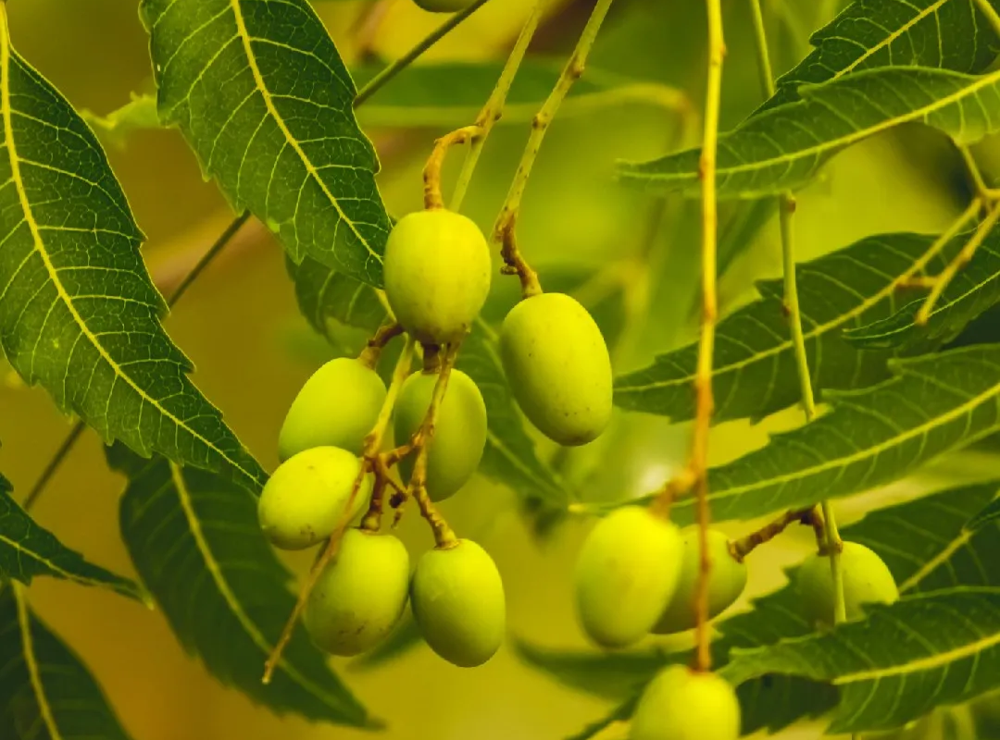
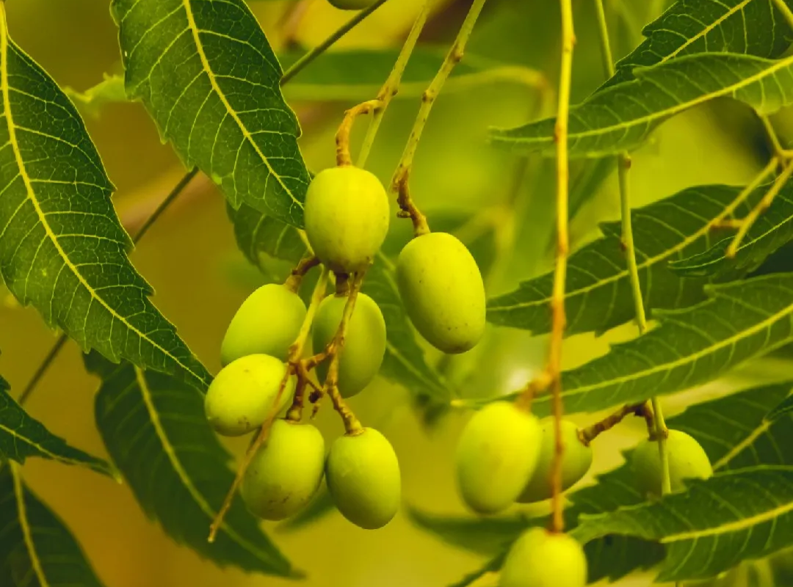

Common Names: Neem, Indian Margosa
Scientific Name: Azadirachta Indica
Suggested Uses: Street Trees, Shade Trees
Where to See: Along Streets, Karachi Airport
 

Most quintessentially Karachi is the mighty Neem tree. This large, mighty tree is a true beast when it comes to bearing with the harshness of urban Karachi. Neem trees are excellent in cleaning the air, providing dense, cool shade, hosting wildlife, and resisting extended periods of drought as well.
Neem trees usually grow to about 35-40 feet though older exceptions may reach 50 feet tall. With their grand wide trunks, far reaching limbs, and vivid green summer dress, to be in front of an old, established Neem tree is an awe inspiring experience.
Like the Chinaberry, Neem’s scientific name is derived from Persian Azad Darakht, meaning noble tree. Indica refers to its subcontinental roots.
Neem trees flower in the early summer. Their flowers are long and white and very occasionally, you might be enchanted by their arresting jasmine-like fragrance. A small green fruit forms soon after. This is turned into Neemkhali, an organic fertiliser. Neem leaves can be boiled to form an organic pesticide. You may also use the concentrated Neem oil to do this, though you should mix a small quantity of soap in a solution of the oil so the mixture is fully homogenised. We’ve always felt Neem Oil has a very pleasant smell, like the season’s best peas.
The Neem tree was the first we as authors ever knew about. Its grand presence and pom-pom like leaves leaves no doubt to any passerby that they are in fact in front of a Neem tree.